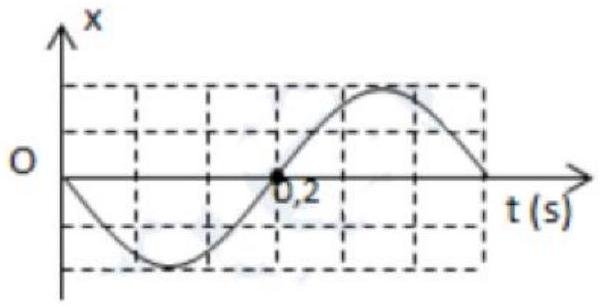
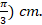
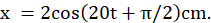
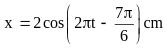

PHẦN III. Câu trắc nghiệm trả lời ngắn
Điền đáp số (có thể dùng dấu phẩy hoặc dấu chấm thập phân). Mỗi câu 0,25 điểm.
1
Một vật dao động điều hòa trên trục Ox . Hình dưới là đồ thị biểu diễn sự phụ thuộc của li độ vào thời gian . Chu kỳ dao động của vật bao nhiêu giây?

s
2
Một chất điểm chuyển động tròn đều trên đường tròn tâm O bán kính 10 cm với tốc độ góc $\omega=5\text{ rad/s}$. Hình chiếu của chất điểm lên trục Ox nằm trong mặt phẳng quỹ đạo có tốc độ cực đại là bao nhiêu cm/s ?
cm/s
3
Một chất điểm M chuyển động tròn đều trên quỹ đạo tâm O bán kính 8 cm với tốc độ v. Hình chiếu của điểm M trên trục Ox nằm trong mặt phẳng quỹ đạo dao động điều hòa với tần số góc 5 (rad/s). Giá trị của v là bao nhiêu cm/s?
cm/s
4
Một chất điểm dao động theo phương trình x = 5cos4πt (cm) có pha tại thời điểm t = 2 s là bao nhiêu rad. (lấy nguyên )
π rad
5
Một vật dao động theo phương trình $x=2{,}5\cos\left(\pi t+\dfrac\pi4\right)$ cm. Khi pha dao động đạt giá trị $\dfrac\pi3$ rad thì li độ $x$ bằng bao nhiêu cm?
cm
6
Một vật dao động điều hoà theo phương trình: $x = 6\cos\left(\pi t+\frac{\pi}{3}\right)\ cm$

. Toạ độ của chất điểm tại thời điểm t = 5 s bằng bao nhiêu cm? cm
7
Một chất điểm dao động điều hòa trên trục Ox có phương trình

Chiều dài quỹ đạo của chất điểm là bao nhiêu cm? (Kết quả được lấy đến phần nguyên). cm
8
Một vật nhỏ dao động điều hòa theo phương trình  (t tính bằng s). Tại t = 2 s, pha của dao động là bao nhiêu rad?
(t tính bằng s). Tại t = 2 s, pha của dao động là bao nhiêu rad?
(t tính bằng s). Tại t = 2 s, pha của dao động là bao nhiêu rad? rad
9
Một vật dao động điều hòa theo phương trình $x=5\cos(10\pi t)$ (cm). Tính li độ của vật tại thời điểm t = 0,075 s (kết quả tính theo đơn vị cm, làm tròn đến hai chữ số thập phân).
cm
10
Phương trình dao động của một vật là: $x=5\cos\left(4\pi t+\frac{\pi}{2}\right)$ (cm). Tính li độ x của vật (theo đơn vị cm) tại thời điểm t = 0,25 s.
cm
11
Một vật dao động điều hòa có phương trình

. Tính li độ của vật tại thời điểm t = 0,25 (s) (kết quả tính theo đơn vị cm). cm
12
Một vật dao động điều hòa trên quỹ đạo dài 20 cm. Tại thời điểm $t_1=0,25$ s và $t_2=0,5$ s thì pha dao động của vật lần lượt là $\frac{\pi}{6}$ rad và $\frac{2\pi}{3}$ rad. Li độ của vật tại $t=0$ là bao nhiêu cm?
cm